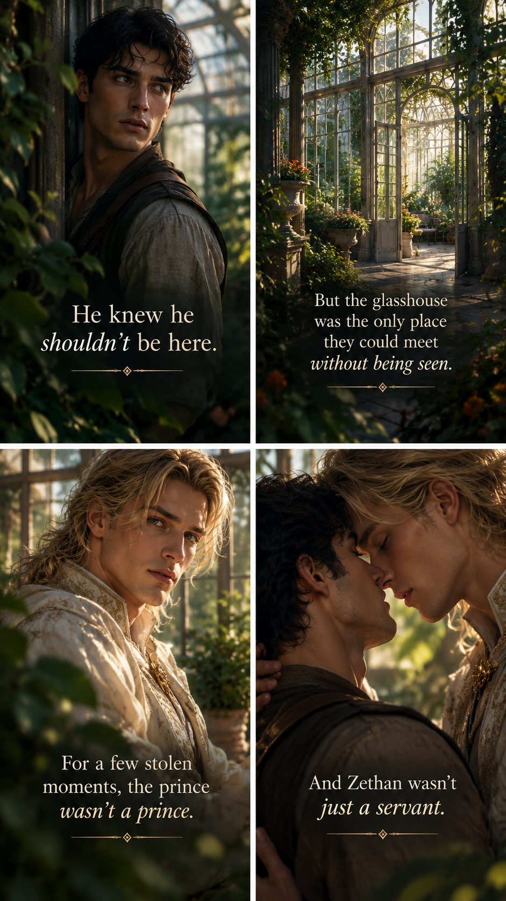

Zethan has spent his life serving inside a palace. Valerious is the prince he was never supposed to love. When the prince is taken, Zethan is drawn into a world of deadly trials, forbidden magic and secrets that could tear the Four Realms apart.
In this world, their love isn't forbidden because they are two men. It is forbidden because one is a servant and the other is a prince.
Follow the journey
“Two men fall in love. That's not the problem.”
Copper forests, lantern-lit streets and a realm wrapped in autumn gold.
Cold, disciplined and dangerous, where strength is tested at the borders.
A realm still waiting to reveal its secrets.
A realm of royalty, warmth and the prince at the heart of the story.